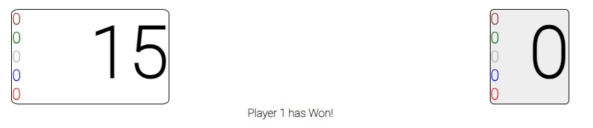
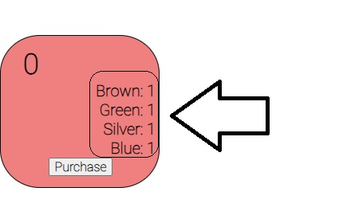

This is my version of Splendor, which is not far off from the original version of the popular card game. I will point out where the rules of the original and this game differ.
The main goal of this game is to get to 15 points or higher. Sounds simple! The way in which you get to 15 involves you purchasing cards throughout the game that allow you to accumulate 15 points. 
Each card you purchase has a color, and you purchase those cards with gems. The card color, once you purchase it, acts as a gem that you get to keep.

You are allowed to grab up to three unique gems each turn, or two of the same color. One way in which this game is different from the original is I did not allow this game to have gold gems that allow you to block other people from purchasing the card, I felt that this game should be more competitive in purchasing. Also, once a gem in the main bank is below 4, you cannot pull double gems from it, until it is replinished.
The cards that are displayed are divided into four groups, each successive one having more points, but also harder qualifications to purchase. While many of the cards of Deck 1 do not have points, you will find that it can make purchasing cards in the next levels easier since they will act as your points without having to constantly get gems. The other way in which this game differs from the original is that I did not allow Noble titles to automatically go to whomever achieved the ability to purchase it. I felt that purchasing once per turn was enough and didn't want the game to swing wildly in one persons favor.